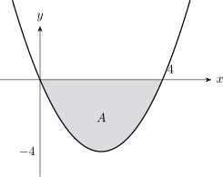

9.5 Frequency polygons
A frequency polygon shows the same information as a histogram using a line instead of bars, which makes it easier to compare two distributions on the same axes.
Definition 9.16. To draw a frequency polygon, plot the frequency density of each class against its midpoint value, \[\text {midpoint}=\frac {1}{2}\left (\text {l.c.b}+\text {u.c.b}\right ),\] then join consecutive points with straight lines.
Example 9.17. Draw a frequency polygon for the following distribution, which gives the time taken by \(60\) students to finish a test.
| Time, \(t\) (min) | \(10\leq t<20\) | \(20\leq t<25\) | \(25\leq t<30\) | \(30\leq t<40\) | \(40\leq t<60\) |
| Frequency | 6 | 15 | 21 | 12 | 6 |
Solution. Step 1 — find the midpoints and the frequency densities.
| Time, \(t\) (min) | Midpoint | Class width | Frequency | Frequency density |
| \(10\leq t<20\) | 15 | 10 | 6 | 0.6 |
| \(20\leq t<25\) | 22.5 | 5 | 15 | 3.0 |
| \(25\leq t<30\) | 27.5 | 5 | 21 | 4.2 |
| \(30\leq t<40\) | 35 | 10 | 12 | 1.2 |
| \(40\leq t<60\) | 50 | 20 | 6 | 0.3 |
Step 2 — plot and join.

Note 9.18. The points go above the midpoints, not above the class limits. A polygon drawn against the limits is shifted sideways by half a class and misrepresents where the peak lies.